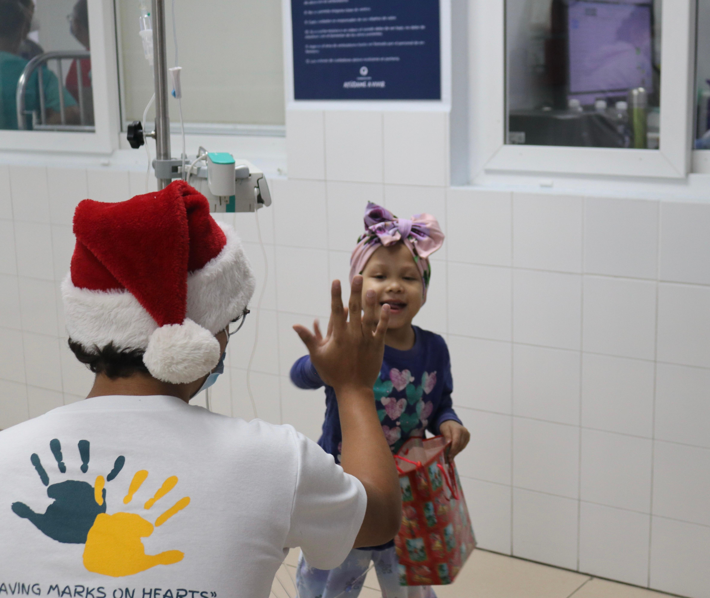
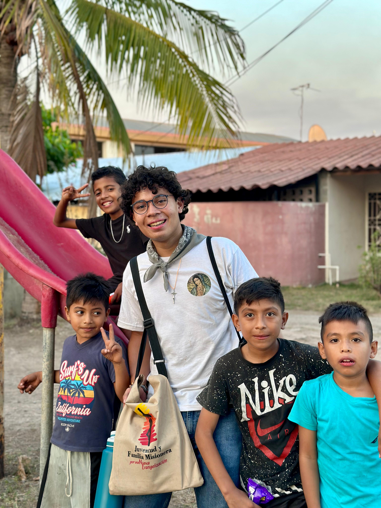
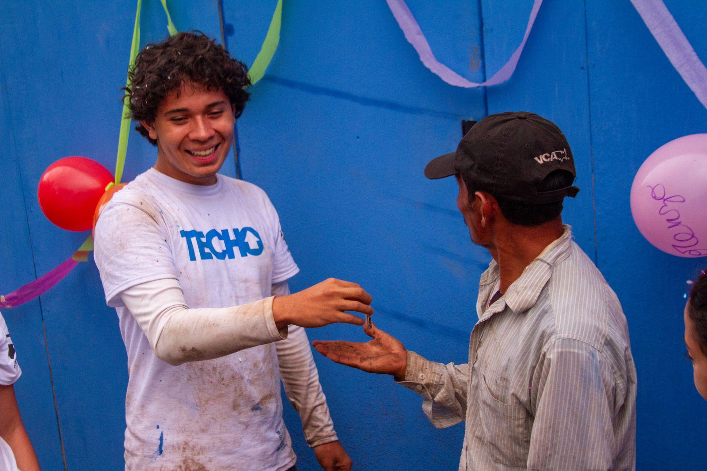

Hey! I'm Guillermo Reyes, but all my friends call me Guille. I'm a First-Year Computer Science student from El Salvador. I was first intrigued by coding when I stumbled across some YouTube videos at the age of 15, I've been passionately learning since. I enjoy listening to music, DJing, and outdoor sports. Throughout my life, I've always found great joy in making other happy; hence, I would love to be a part of Bits of Good, as I aim to put my talent, work and energy to the service of others.
Operation Hope

Regnum Christi Missionary Corps

Techo
